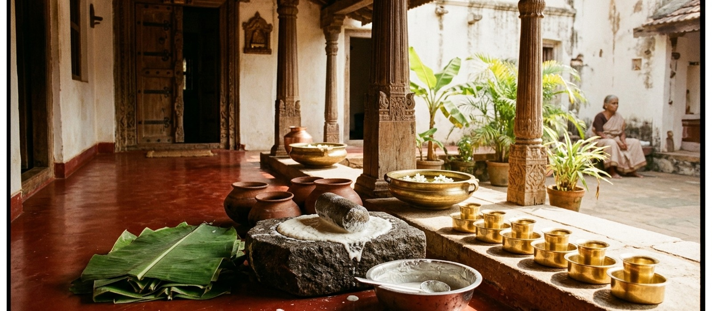
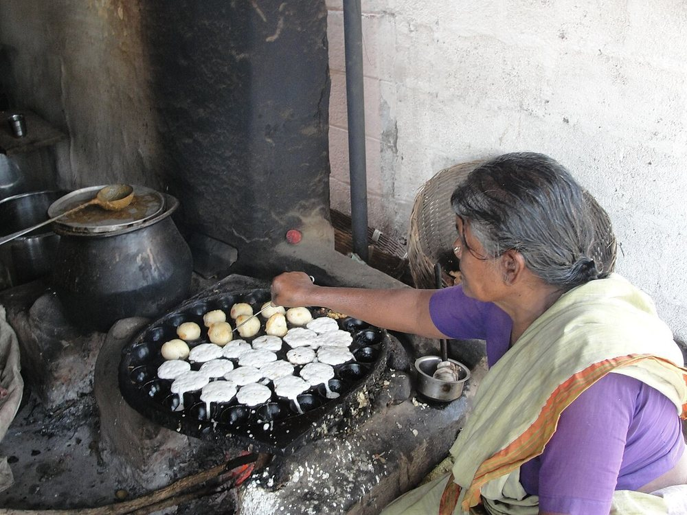
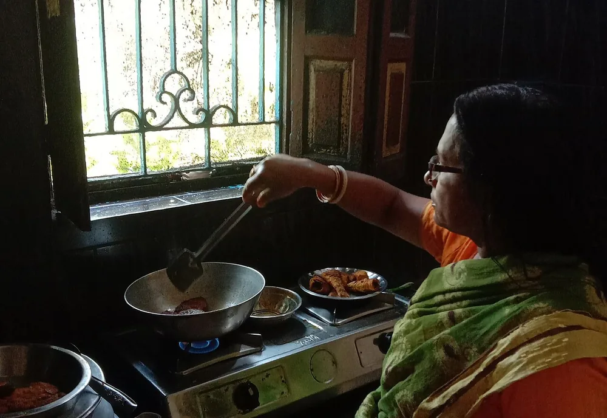
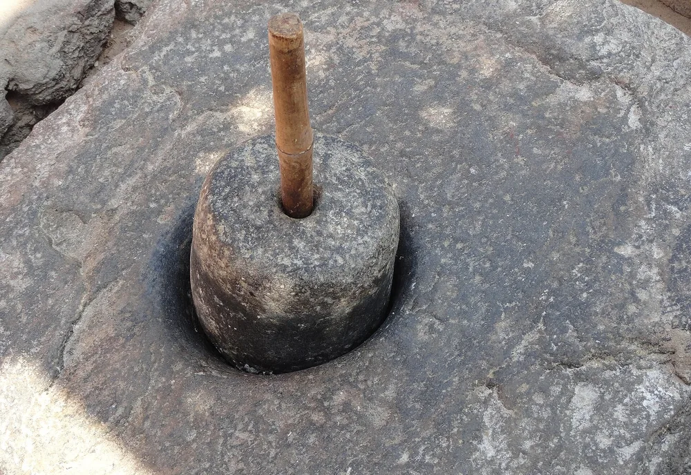
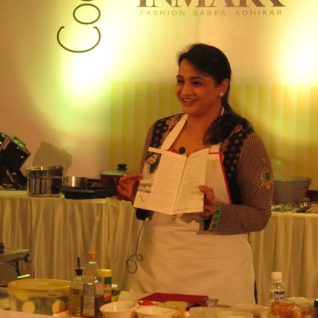
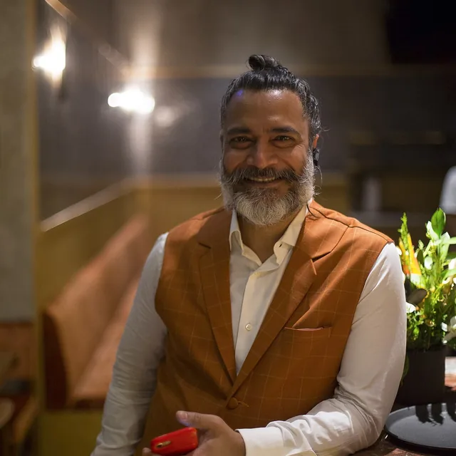

August 1988
First Four Benches in Covent Garden
Amma opens her original tiffin counter with 40 idlis, one pot of arachuvitta sambar, and six brass coffee tumblers.

Before our dining room opened its doors on Covent Garden Piazza, morning visitors followed the aroma of roasted fenugreek, curry leaves, and fresh churned ghee drifting from Meenakshi Amma’s kitchen.
From an unhurried morning veranda to a Covent Garden London landmark.

Before our dining room opened its doors on Covent Garden Piazza, morning visitors followed the aroma of roasted fenugreek, curry leaves, and fresh churned ghee drifting from Meenakshi Amma’s kitchen.

In August 1988, Smt. Meenakshi Sundaram began setting out four teak benches on her tiled front thinnai for nadaswaram artistes and elderly templegoers who needed an honest, unhurried breakfast at 6:00 AM.
Her rule was simple: never serve anything to a paying guest that she wouldn’t place on her own grandchildren’s banana leaves. Every ladle of sambar was finished with freshly ground coriander-coconut paste rather than boxed masala powders.

High-speed steel blades heat up soaked lentils, dulling their delicate aroma and forcing kitchens to add baking soda. Granite stones turn slowly, folding microscopic air pockets into black urad dal while keeping the batter cool to the touch.
Even today, our custom motorised granite drums mirror the exact cadence of Amma’s original carved stone—producing Malligai idlis so light they bounce back under your fingertips.
Milestones along our 38-year journey of authentic South Indian stewardship.
Amma opens her original tiffin counter with 40 idlis, one pot of arachuvitta sambar, and six brass coffee tumblers.
We partner directly with single-origin shade-grown coffee estates for our signature 80:20 peaberry-chicory roast.
Every sack of aged Ponni rice, pure organic jaggery, and fresh cold-pressed coconut oil begins arriving directly from sustainable farmer collectives.
Second-generation hosts expand our Covent Garden dining hall with reclaimed teak pillars and zero-plastic leaf service.
Preparing our second neighbourhood kitchen in Soho while keeping every chutney batch ground thrice a day.
The three timeless culinary pillars guiding every stone-ground batch, every iron-roasted dosa, and every serving.
Batters rest overnight in custom climate-controlled chambers, developing gentle tang, B-vitamins, and effortless digestibility.
Vatha kuzhambu simmers in seasoned clay manchatti, dosas crisp on thick cast-iron kal, and coffee drips through heavy brass.
Used banana leaves and coconut husks go directly to local cattle goshalas and compost gardens every afternoon.
Led by family custodians and master cooks who have stood beside our tawas for decades.

Daughter-in-law of Meenakshi Amma; oversees daily spice roasting, podi ratios, and festival payasam kettles.
22 years of cast-iron mastery; orchestrates the 6:30 AM roast line and trains every apprentice in batter hydration.
Guardian of our Arachuvitta sambar, temple puliyodarai, and 18-course marriage banana-leaf sadhya feasts.

Second-generation host and master coffee blender; ensures every guest leaves with a warm heart and frothy kaapi.